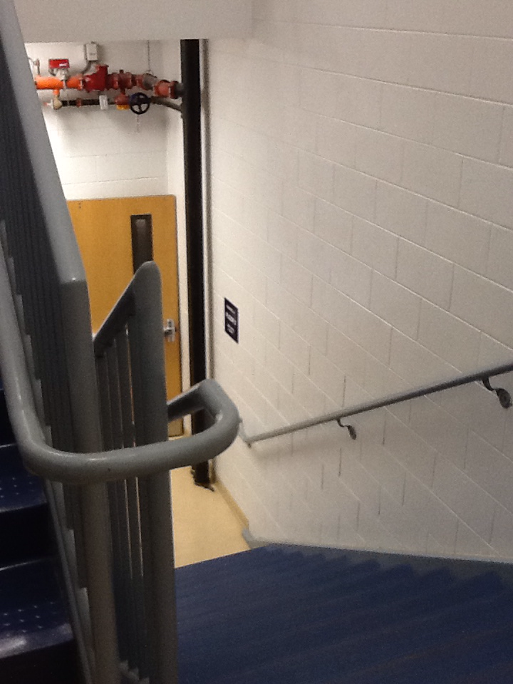
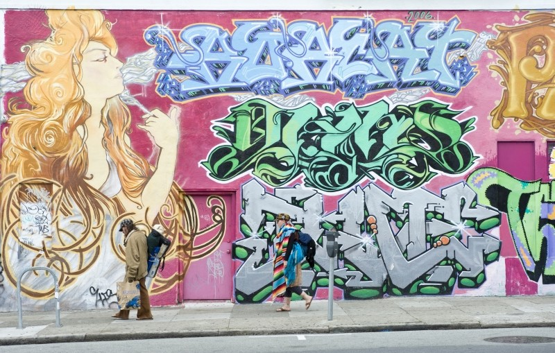
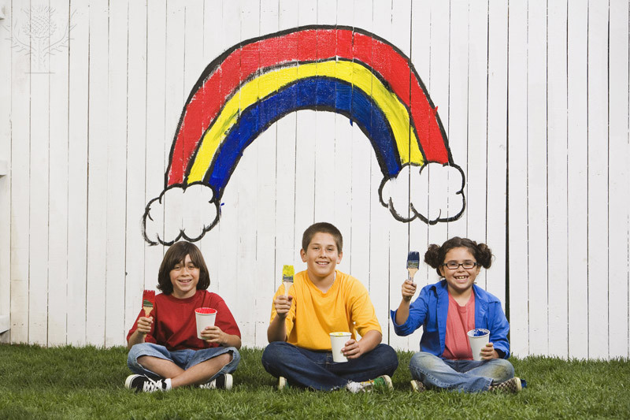

If you think that stairwells in this school are bland, you are not alone. Through surveys we found that an amazing almost 90% of students found that the stairwell in the 7th grade pod was bland and/or boring. Our campaign think we have found a way to fix it
We took a survey and found that most students believed that the stairwells should be repainted to be a more colorful hue. Imagine how much better your day would be if when you came upstairs in the morning you were surrounded by colors, it would make you feel happier, and put more effort into your work.
In that same survey we asked people if a club would work to paint the Stairwells and most people said yes. These kids would obviously be moderated by an adult to be sure that everything is appropriate. If a club with its sole purpose to paint the 7th grade stairwell. These kids would help paint the stairwells in a playful and colorful way. If a club did paint the stairwell the kids could bring their own paint, which would eliminate cost.
